Meetup INSEE Science Ouverte 2026
2026-05-21
Question
La place de ces notebooks computationnels + favorisent-ils la reproductibilité des traitements de données ?
Expérience personnelle, réflexions dans le projet NOOS (avec Mariannig Le Béchec, Célya Gruson-Daniel et Clémence Lascombes) et le GT Notebooks
De quoi parle-t-on ? Un format qui lie code et contenu inspiré de la programmation lettrée (literate programming) reposant sur un environnement d’exécution
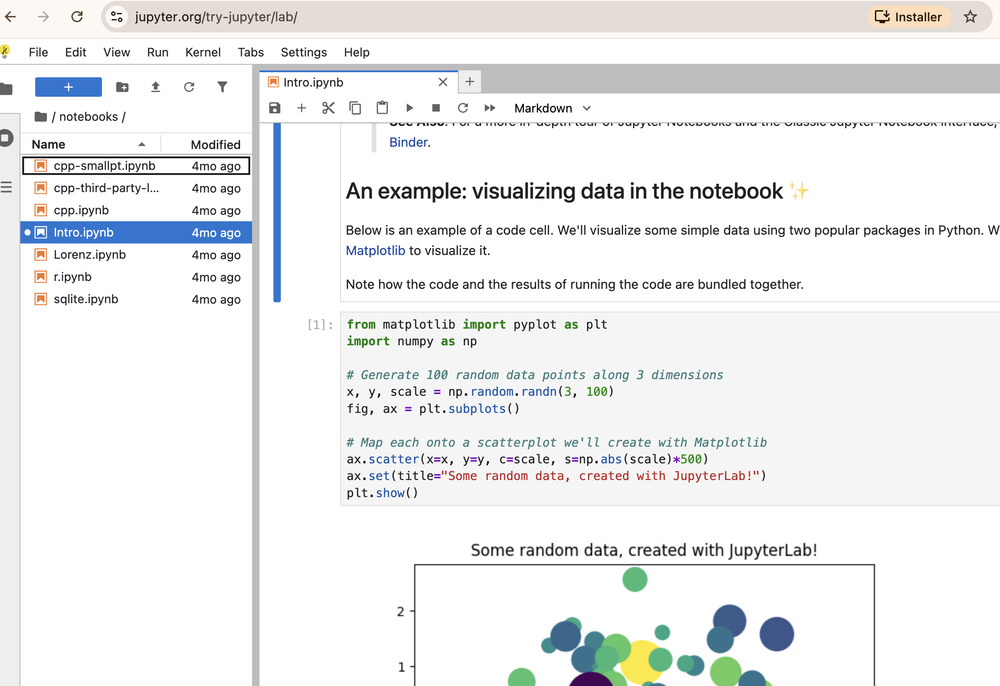
Pas un usage unique mais un spectre de pratiques (en Python uniquement)
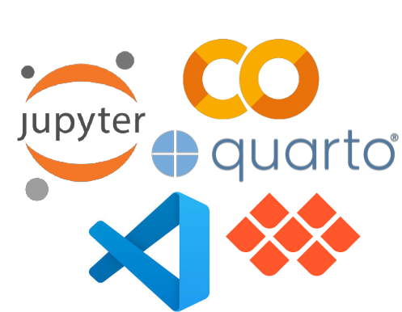
Et en parallèle : des scripts, des fichiers markdown, etc.
Remettre un peu en perspective d’un format
.ipynb en navigateurUne histoire de glissements : du logiciel scientifique vers la plateforme grand public
Un format ancré dans la programmation scientifique venu de la recherche (Schultz 2023).
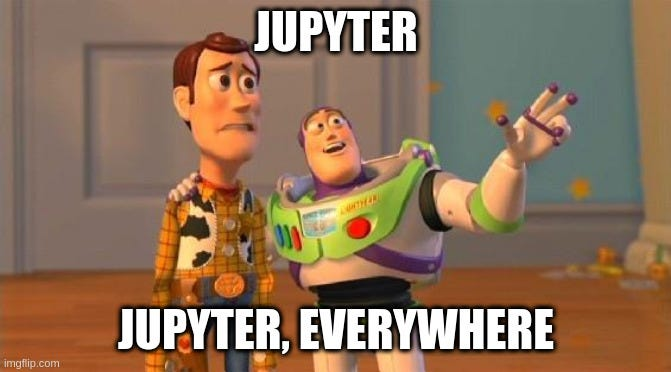
“If you typed Python in the command line, you got a, an interactive shell, it was a very, very primitive and it didn’t allow me to do the kinds of things that were very natural in interactive scientific workflows with tools like IDL or Mathematica that I used heavily or Matlab or Maple that other used which was simply to type a bit of code, see the results right there, open a plot, look at the files on, on the file system, et cetera.” Fernando Pérez, 2012
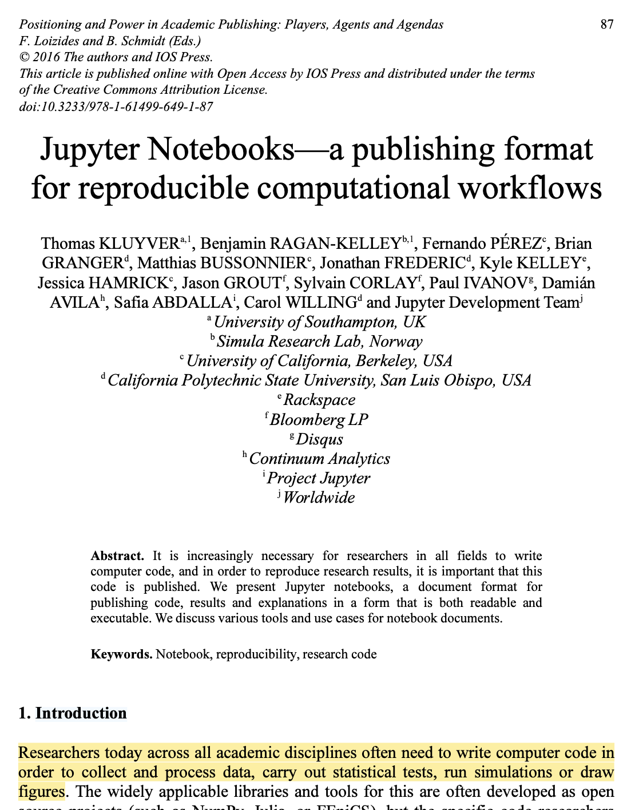
Avoir le code et les résultats rapprochent de la reproductibilité
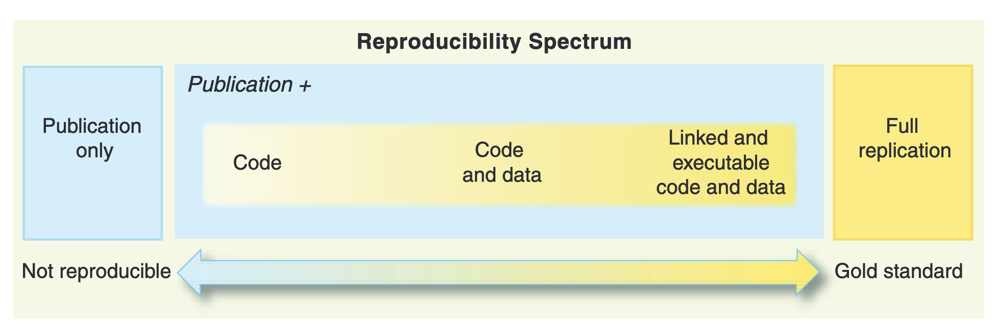
En lien avec les forges, les dépots de données, etc.
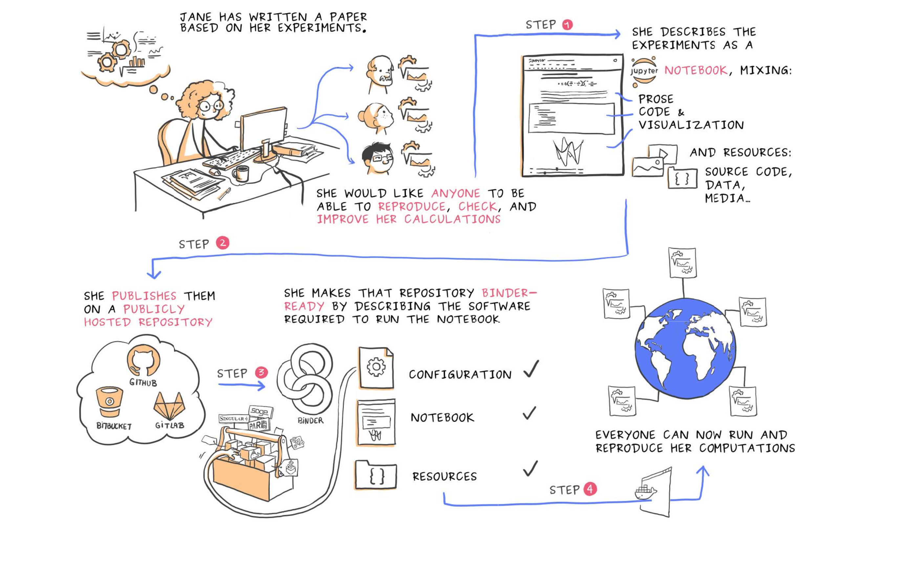
Juliette Taka and Nicolas M. Thiery. Publishing reproducible logbooks explainer comic strip. Zenodo. DOI: 10.5281/zenodo.4421040 (2018).
Pourquoi ? De multiples facteurs, et une question ouverte
“I think notebooks are popular for the same reason that explains the popularity of spreadsheets such as Excel. I haven’t met a single software engineer who loves Excel. Everyone hates it and makes fun of it, but why do so many users still use it?”
Accès à un écosystème + des ressources (dont GPU) depuis 2017 facilite les usages
Summarising 3 Years of Google Colab Usage — The Good, the Bad, and The Ugly
D’autres interfaces : HPC, etc. - le succès d’Onyxia
Qui double la diversité d’usages
Format / exécution
Plateformes intégrées
Chaque combinaison déplace les compromis : reproductibilité, collaboration, accès aux données
Notamment sur les aspects de reproductibilité
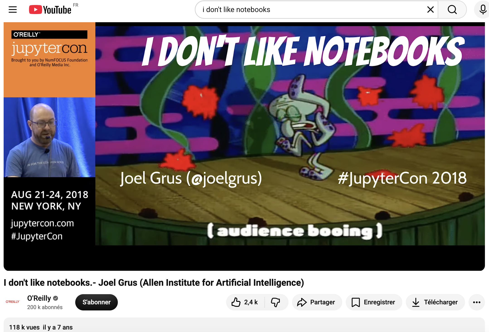
Tensions entre deux cultures : ingénierie logicielle et analyse de données
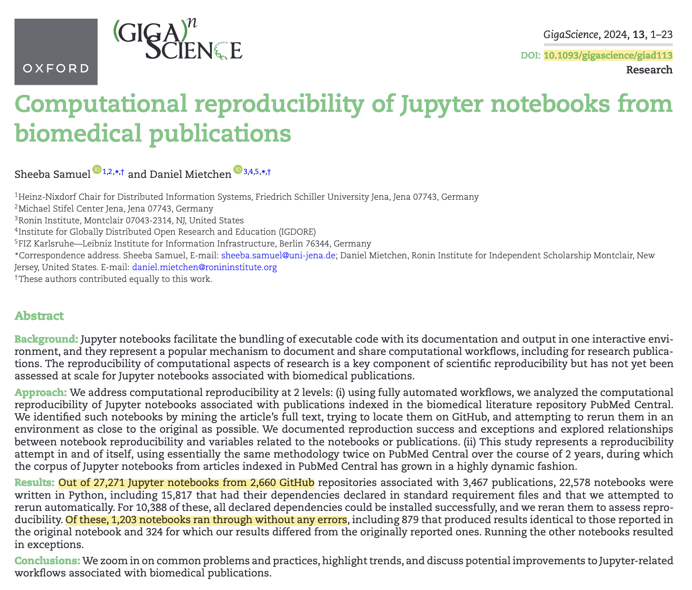
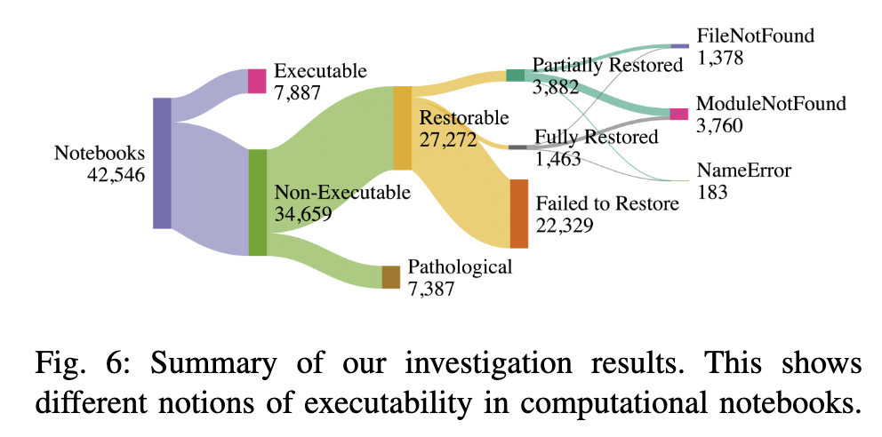
Des degrés de reproductibilité : paradigme spécifique aux notebooks interactifs qui n’est pas celui des logiciels (Nguyen et al. 2025).
Surtout vu des bonnes pratiques de la programmation (logicielle)
(mais des critiques adressées en général à la programmation scientifique)
Les notebooks computationnels sont intéressants pour l’exploration et l’explicitation des traitements
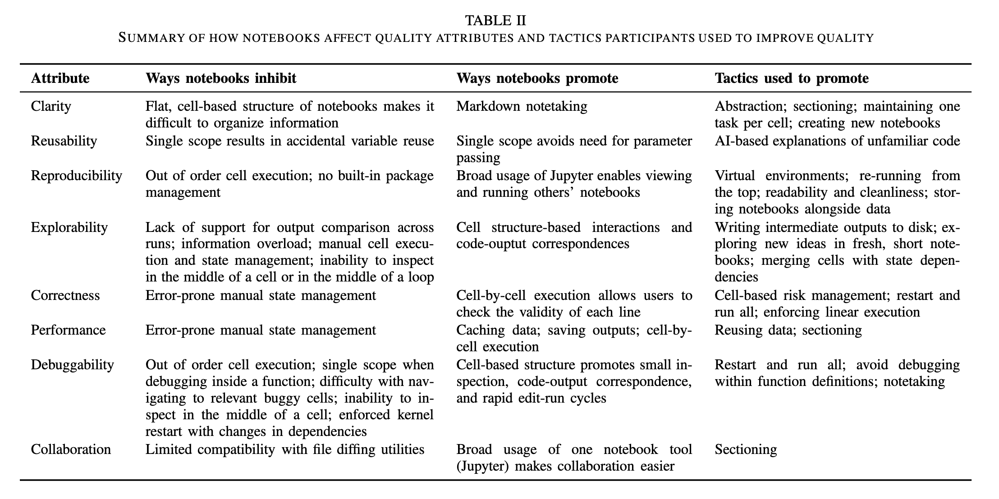
Huang, Ruanqianqian, Savitha Ravi, Michael He, Boyu Tian, Sorin Lerner, and Michael Coblenz. 2025. How Scientists Use Jupyter Notebooks: Goals, Quality Attributes, and Opportunities. arXiv:2503.12309. arXiv. https://doi.org/10.48550/arXiv.2503.12309. Huang et al. (2025)
Qui se rapprochent de pratiques générales de science ouverte
Un notebook computationnel est un artefact qui commence généralement comme un scratch pad (exploration) et peut, pour certains, finir comme un document complet (explication) — voire un livre avec Jupyter Book (Rule et al. 2018)
« We found that each task fit into one of three categories: disposable exploration, findings, and artifact » Huang et al. (2025)
Les notebooks évoluent dans le temps (Raghunandan et al. 2023) et à ce titre sont souvent des objets intermédiaires.
Il manque une sémantique pour marquer leur stade d’avancement
Un format vivant n’est pas un format d’archive
.ipynb mélange code, sorties et métadonnées d’exécution : tout évolue indépendammentPistes : Software Heritage (archivage du code), Zenodo + DOI (versionner les livrables), conversion vers HTML/PDF au moment du dépôt
Pérenniser un notebook = en sortir
Beaucoup d’inconnues sur les pratiques (en général, et en particulier sur les notebooks)
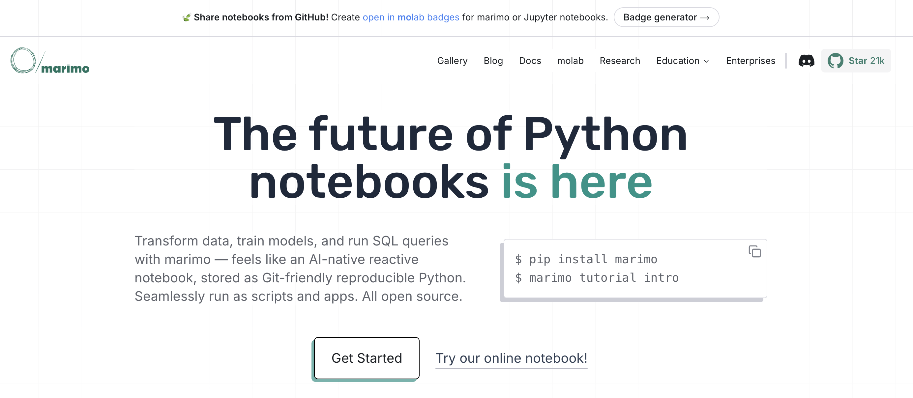
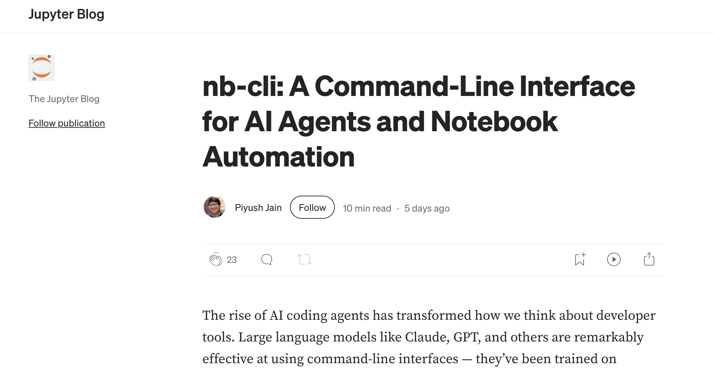
Opportunité : un notebook non reproductible reste réutilisable si le prompt et le contexte sont lisibles (Nguyen et al. 2025)
Les notebooks favorisent-ils la reproductibilité ? Oui et non, selon ce qu’on appelle « reproductibilité ».
.ipynbL’enjeu n’est pas de choisir pour ou contre les notebooks, mais de mieux outiller leurs transitions — du brouillon vers le partage, du partage vers l’archive.
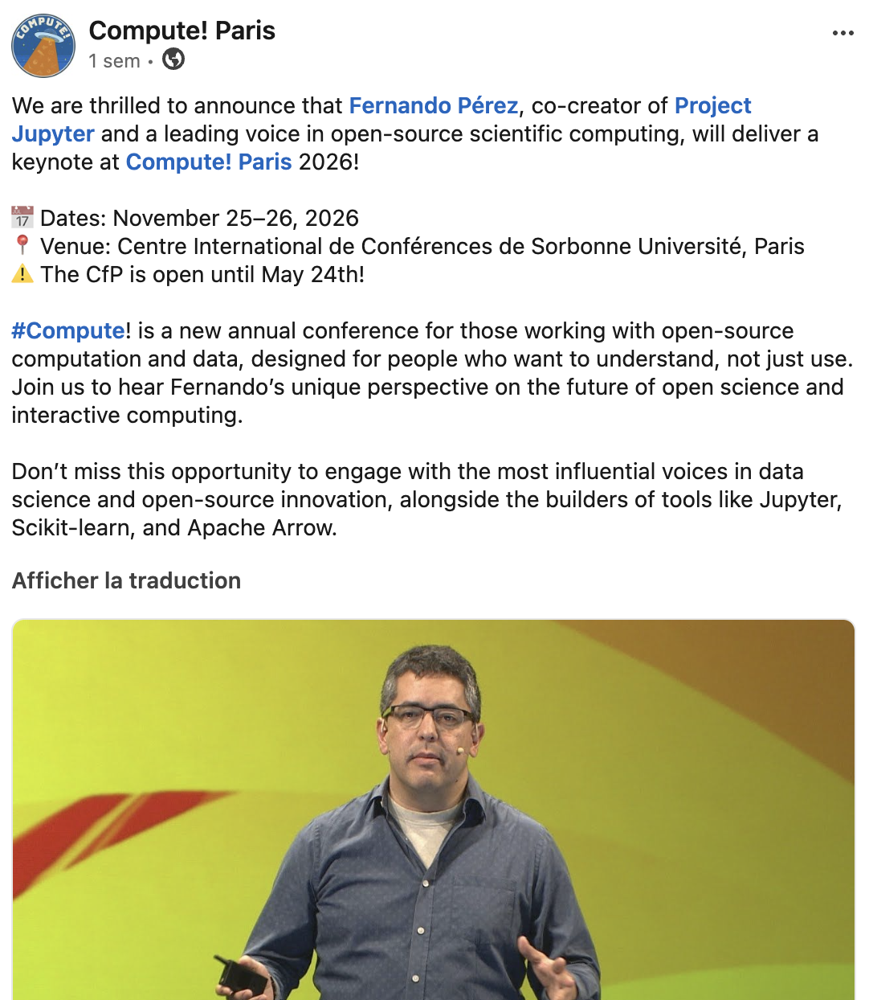
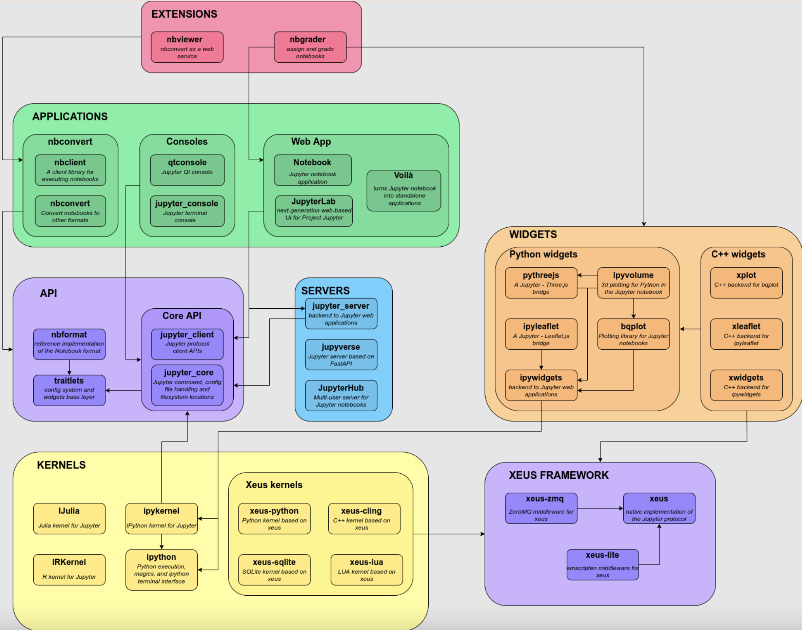